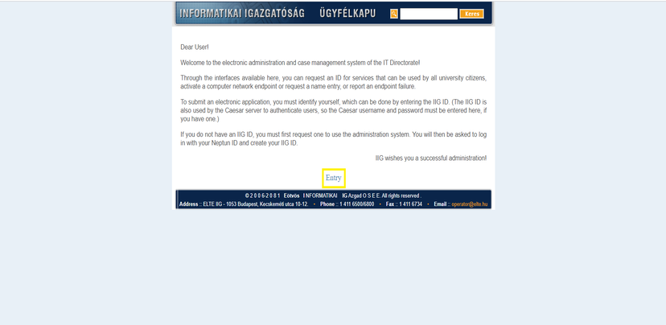
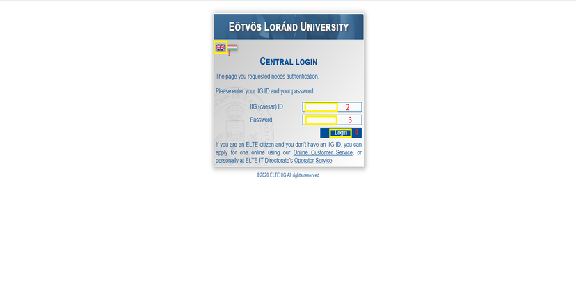

The IIG account is different to your Neptun Id or your Inf Id. These credentials are mainly used to connect to the Wifi service at the University, access your Caesar (IIG) mailbox. Follow the link below to create a new IIG Id if you don’t have one. Sign in with your Neptun credentials the first time to create an IIG account. Once you have your own IIG account, you can use these credentials to sign in from the next time in case you want to change the password or something else.
To use the web app instead, please follow the below link and after signing in click on 'use the webapp instead' link/option when prompted.
You can find other details related on how to connect to the University wifi/alternate method to setup you IIG account in the below link.
https://www.esnelte.hu/wifi-setup-elte
1. Click Entry and change the language to english.
2. Enter your username and password and click login.
Credentials needed to sign in to the application:
IIG Caesar username
Password - The respective password provided to you for your username.
Step 1
Step 2
